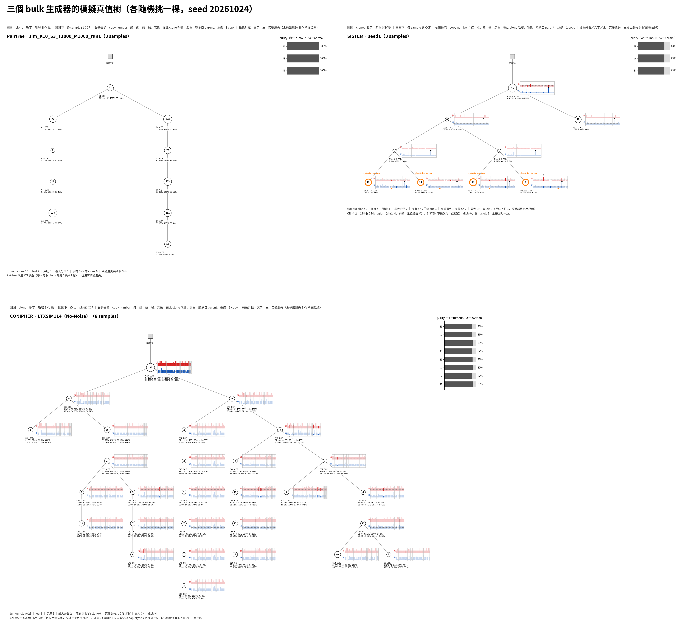
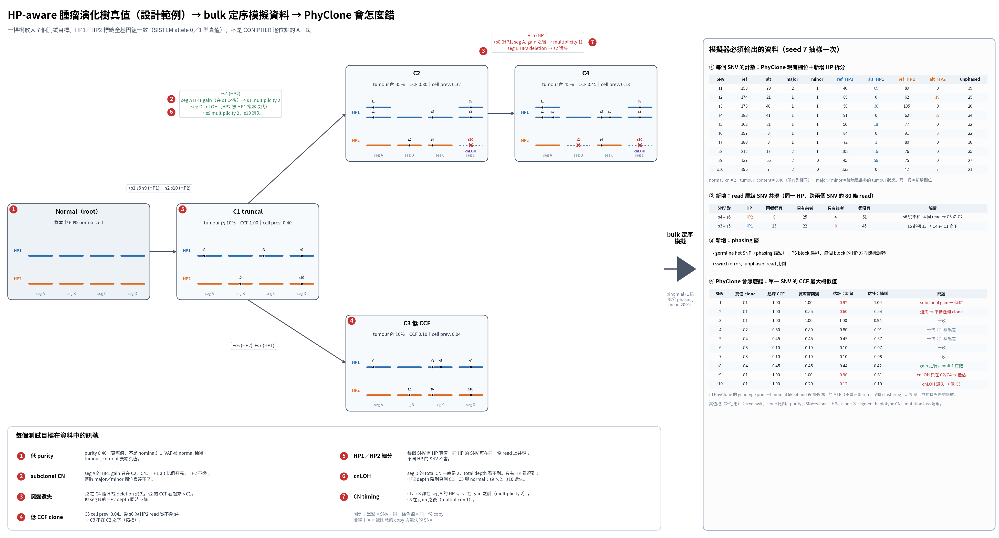

目前只看過 Pairtree 和 CONIPHER 兩個生成器。要驗證 HP-aware PhyClone，需要知道有沒有現成工具能同時給真值樹、SNV 資料和 haplotype 資訊，不必自己寫。
ALL_SIMULATORS.tsv 有 129 列，已 commit。read 層與 HP 真值不能靠現成工具，要自己寫。現成工具最多只能提供真值骨架或 bulk baseline。當天稍後的範圍更正把推薦名單縮到只剩 SISTEM（見下一項）。
unverified。session 18fc1cc2 10-24 13:53–14:19。報告 01–06 是第一輪 6 個方向，07–10 是補查（OncoSim、CancerSim、TumorSim、Moonshot）。總表第一版 104 列，補查後 129 列；被兩組都調查到的工具出現兩列。commit 2d4101c：25 個檔、+1581 行。
research/simulation_pipeline_research/simulator_survey_2026-10-24/README.mdresearch/simulation_pipeline_research/simulator_survey_2026-10-24/ALL_SIMULATORS.tsvresearch/simulation_pipeline_research/simulator_survey_2026-10-24/01_bulk_method_simulators.mdresearch/simulation_pipeline_research/simulator_survey_2026-10-24/10_moonshot.mdresearch/simulation_pipeline_research/README.mdresearch/INDEX.mdcommit 2d4101c原本：上午的調查推薦 clonesim 當 HP 真值骨架，ProCESS 用來測 HP 特徵，VISOR、PSiTE 用來產生 read。下午追問後發現，這些工具的輸出都不能直接給 PhyClone 這類 bulk 建樹軟體。
之後不再考慮 single-cell 生成器或只做 read 的工具。HP 驗證資料要自己寫：真值骨架用 SISTEM 或自寫，read 層與 HP 觀察值也要自己做。這條規則已寫進記憶，之後的調查會照這個標準篩。
OUTLINE_v4.md 第 153 行仍用 VISOR 當問答範例，照簡報規則沒有改。notes/06_CLONESIM.md 和 clonesim 試跑紀錄保留在 repo，只加註「已排除」。session 18fc1cc2 10-24 15:47–16:05。順序：15:47 確認 clonesim 只有 single-cell read；15:50 移出 clonesim 並重畫比較圖成 3 個工具；15:57–16:01 問 ProCESS 後決定全刪（含 rRACES、CLONES、SCOUT）；16:04 VISOR、PSiTE 移出、methods_survey 的 SCOUT 刪除 5 處。記憶檔：clonesim-excluded-bulk-scope.md。
research/simulation_pipeline_research/simulator_survey_2026-10-24/README.mdresearch/simulation_pipeline_research/simulator_survey_2026-10-24/04_evolutionary_simulators.mdresearch/simulation_pipeline_research/simulator_survey_2026-10-24/10_moonshot.mdresearch/simulation_pipeline_research/notes/06_CLONESIM.mdresearch/simulation_pipeline_research/notes/08_SIMULATOR_COMPARISON.mdresearch/literature/surveys/methods_survey/README.mdresearch/literature/surveys/methods_survey/workers/W7_proceedings_2025_2026.mdresearch/literature/surveys/methods_survey/workers/W8_benchmark_update_2026-10-18.mdlab_report/2026-10-24_sim_truth_tree_comparison/README.md要選 HP 驗證資料的真值來源，需要知道各生成器的真值裡有什麼：CN 有沒有放在樹上、SNV 在哪個 allele、有沒有 mutation loss、purity 多少。
notes/06、07、08：逐工具拆解程式，再做四方比較。round(depth × fraction)，沒有 binomial 抽樣，混合 VAF 也沒有用 CN 加權。實測和正確值最多差 0.12。| 工具 | 得分 | allele 標籤全基因組一致 | 可直接用的 read count | seed 可重現 | 授權 |
|---|---|---|---|---|---|
| CONIPHER | 10 | 否 | 是 | 是 | BSD-3 |
| SISTEM | 8.5 | 是 | 有，但模型不對 | 外部設定後可以 | GPL-3.0 |
| clonesim | 7.5 | 是 | 否（只有 single-cell） | 是 | 無 |
| Pairtree | 2.5 | 否 | 是 | 否 | 無 |

第一個 PhyClone baseline 用 CONIPHER：它有現成資料，也能逐 byte 重現。要跨位點的 HP 約束（兩個 SNV 是否同一條 haplotype），只有 SISTEM 的真值做得到，但 read count 要用它的真值重抽。
session 18fc1cc2 10-24 14:19–15:45。clonesim commit f148511，build 要改兩處設定，同 seed 5 個輸出逐 byte 相同；bug 在 L662。SISTEM 1.0.5（git 627f888），外部設 np.random.seed 後 12 個輸出逐 byte 相同；計數問題在 reads.py:296–302。CONIPHER allele 判斷依據 evolution.py:163–180。比較圖 15:12 版加 CCF／SNV 數／事件位置／purity；15:31 版改紅藍長條與橘色 loss；15:53 版移除 clonesim。圖上 purity：Pairtree 約 1.00、CONIPHER 0.86–0.89、SISTEM 0.83。
research/simulation_pipeline_research/notes/06_CLONESIM.mdresearch/simulation_pipeline_research/notes/07_SISTEM.mdresearch/simulation_pipeline_research/notes/08_SIMULATOR_COMPARISON.mdtools/plot_sim_tree_comparison.pytools/sistem_snv_presence.pytools/sistem_to_phyclone.pytools/clonesim_inspect.pypython3 tools/plot_sim_tree_comparison.py lab_report/2026-10-24_sim_truth_tree_comparisonlab_report/2026-10-24_clonesim_sistem_trial/lab_report/2026-10-24_sim_truth_tree_comparison/sim_truth_tree_comparison.pnglab_report/2026-10-24_sim_truth_tree_comparison/sim_truth_tree_figures.zip手繪的 HP 真值樹（下圖）預測：不給 HP 資訊時，PhyClone 會低估 CCF、把遺失的 SNV 放錯 clone、弄錯低 CCF clone 的位置。要用實際 run 驗證這些預測，當作之後加 HP 的基線。
-l 0）和開啟（-l 0.05），各跑 5 個 MCMC seed。每次 run 都做 map 和 topology-report。| 模式 | run 數 | 直線樹比例 | 分岔樹比例 | C1／C2 合併 | s10 併進 C3 | 遺失 SNV 進 outlier |
|---|---|---|---|---|---|---|
| -l 0 | 5 | 0.38–0.40 | 0.59–0.62 | 1.000 | 0.998–0.999 | 0 |
| -l 0.05 | 5 | 0.36–0.42 | 0.57–0.63 | 1.000 | 0.997–0.999 | 0.13–0.44% |

這組結果指出 HP 與 read 資訊該補在哪兩處。拓樸：帶 s6 的 read 從不帶 s4，可以直接排除直線樹。遺失：seg D 的 HP2 depth 下降、HP1 上升，可以指出 s10 是 cnLOH 造成的遺失，不是低 CCF clone。另外，只看 MAP 會得到錯的拓樸結論，評估時要看 posterior。
--assign-loss-prob 沒測，它需要 cluster 檔和 chrom 欄。session e623fed9 10-24 17:05–18:29。PhyClone 用 submodule＋~/venvs/phyclone，-d binomial -b 100 -n 1000 --num-chains 4。seed 1 的 MAP：-l 0 是 (((2)1)0)root，-l 0.05 是 ((1,2)0)root。每次 run 約 3240–3505 種不同的 tree_hash（hash 含 SNV 指派），所以直接看 topology-report 的 count 太分散，改讀 topologies.tar.gz 的每棵樹再加權。eval 腳本原本在 newick_parents 有一段會讓摘要卡住，刪掉後 10 次 run 17 秒跑完。
tools/draw_hp_truth_tree.pytools/hp_truth_tree_to_phyclone.pytools/eval_hp_truth_phyclone.pytools/summarize_hp_truth_topologies.pylab_report/2026-10-24_hp_truth_tree_phyclone/README.mdlab_report/2026-10-24_hp_truth_tree_phyclone/run_seeds.shbash lab_report/2026-10-24_hp_truth_tree_phyclone/run_seeds.sh 2 3 4 5python3 tools/summarize_hp_truth_topologies.py <input> <run 目錄…>lab_report/2026-10-24_hp_truth_tree_phyclone/topology_posterior_summary.tsvresearch/simulation_pipeline_research/figures/hp_truth_tree.png10-23 已確認 CONIPHER 的生成程式能重現資料。今天要弄清楚：生成器的輸入輸出是什麼，以及 PhyClone benchmark 的檔案是怎麼從生成器輸出變來的。
pearsim）和 CONIPHER（TRACERx_simulation_tool）生成程式的參數、步驟與輸出。data_archive/ 的檔案和 Zenodo 生成器輸出，反推轉換規則。program_inputs/phyclone_outliers/clusters.tsv.gz 和 PyClone-VI 的輸出逐檔比對。05_OTHER_SIMULATORS.md 三個新節。tx_simulation() 直接收參數，必填 6 個。PhyClone 在 CONIPHER 資料上的分數，是在「cluster 由 PyClone-VI 先分好」的條件下得到的。我們自己做模擬時，可以直接呼叫 tx_simulation()，照 ONT 細胞株的 purity 與 depth 給參數。
data.tsv 的列順序找不到規則，無法逐 byte 重現。05_OTHER_SIMULATORS.md 的這三節還沒 commit。session 18b3c0e3 10-24 13:16–13:36。版本：pearsim@0b9b249、TRACERx_simulation_tool@8c8d173。Zenodo 實測：Noise 組 fract_noise 0.05–0.10、prop_mut_lost 0.02–0.25；No-Noise 組兩者都是 0（150 份）。轉換規則：major_cn＝round(max(CN_A,CN_B))、minor_cn＝round(min)、tumour_content＝PURITY 真值、mutation_id＝s<VAR_POS>；tree.json 去掉 normal→truncal 邊，沒有非 noise SNV 的 clone 被刪（Noise 13/150）。新增三節：輸入與輸出比較、病人摘要表、PhyClone 的 CONIPHER 資料怎麼來。
research/simulation_pipeline_research/notes/05_OTHER_SIMULATORS.mdlab_report/2026-10-22_pairtree_conipher_sim_rerun/README.md/big8_disk/boyu114/phyclone_dataset/CONIPHER_No-Noise/data_archive//big8_disk/boyu114/phyclone_dataset/CONIPHER_Noise/data_archive/tools/summarize_hp_truth_topologies.py 摘要 10 次 run 時兩次逾時。先懷疑 tar.gz 重複解壓，但壓縮檔只有 956 KB；用 faulthandler 定位到 eval_hp_truth_phyclone.py 的 newick_parents。
為什麼：要讓模擬資料能同時測 mutation loss、subclonal CN、低 purity、低 CCF clone 的拓樸，並細分 HP1／HP2，需要先把「真值長什麼樣、bulk 資料要給什麼」畫清楚。做了什麼：先釐清三件事。(1) SISTEM 的 allele 0／1 可以當 haplotype 真值（重新下載 SISTEM 1.0.5 原始碼核對：起點兩個 homolog、複製保留 allele、事件記錄所在 allele），但它不等於 longphase 的 HP：longphase 只在 PS block 內一致、需要 germline het SNP、有 switch error。(2) CONIPHER 的 [nA, nB, m] 只記「幾份帶突變」，A 只在單一位點內有意義，不能判斷兩個 SNV 是否同側。(3) PhyClone 看不到 subclonal CN 的原因在輸入格式和模型：每列只有一組整數 major／minor（pyclone.py L300–301），帶突變的 tumour cell 只有一個 CN（math_utils.py L216–244）。接著用 tools/draw_hp_truth_tree.py 畫 hp_truth_tree.png：Normal → C1 → C2 → C4、C1 → C3，seg A–D，purity 0.40，C3 CCF 0.10；右側是 bulk 資料欄位、HP 拆分計數、read 共現表、phasing 層。使用者選 1＋2＋4 再補：cnLOH（seg D、s9／s10）、gain 後才發生的 s8、PhyClone 預期 CCF（s1 0.92、s2 0.60、s9 0.90、s10 0.12、s8 0.44）。結果：圖完成，之後直接轉成 PhyClone 輸入實跑（見呈現層第 4 項）。狀態：圖是手動設計，不是 SISTEM 實際輸出；沒 commit。
tools/draw_hp_truth_tree.pyresearch/simulation_pipeline_research/figures/hp_truth_tree.png為什麼：論文筆記原本分散在 tumor_phylogeny_2026/papers、methods_survey、references 等 3 個目錄，找論文要翻多處。做了什麼：新建 research/literature/，底下有 papers/（18 篇）、papers_by_category/（symlink 重建）、surveys/（patient_sc_longread_2026、methods_survey、longread_tree_search_2026-10-19）、tools/sync_paper_categories.py 和新 README。44 個檔案的連結改到新位置，包括 CLAUDE.md、plan.md、tumor_sample.md、report/ 的 brief 與投影片。CLAUDE.md 篇數從 22 改成 19（papers/ 18 篇＋H01）。結果：全 repo 0 個壞連結，sync_paper_categories.py --check 0 drift，validate_bundle.py 0 errors。用暫存 worktree 只 commit 這次整理的檔案（f73262f，156 檔），再把之前未 commit 的 M02 TreeClone 刪除獨立 commit（966468c，18 檔）。meeting_record/ 原本沒進 git，因 INDEX 連到它而一起 commit。push 4a05ae0..966468c，連同先前的 0321ee4、4d5c508 共 4 個 commit。狀態：完成；plan.md、report/ 等其他未 commit 改動仍在本地。
research/literature/README.mdresearch/literature/PAPER_CATEGORIES.mdresearch/literature/paper_categories.tsvresearch/literature/tools/sync_paper_categories.pyCLAUDE.mdresearch/INDEX.mdpython3 research/literature/tools/sync_paper_categories.py --checkgit push origin maincommit f73262fcommit 966468c為什麼：使用者看比較圖時發現，CONIPHER 的真值樹常把 CCF 相近的 clone 分開，clone 數很多。做了什麼：讀 TRACERx_simulation_tool 的 sequencing.py，並寫 tools/conipher_clone_resolvability.py 統計全部 150 份 No-Noise 資料。結果：每棵真值樹 clone 數中位數 19（8–29），PhyClone 實際收到的 PyClone-VI 群數中位數 8；新增 SNV ≤5 的 clone 占 33%；所有 sample 比例都是 0 的 clone 占 16%；CCF 和 parent 完全相同的占 9%（容許差 0.1 時 18%）。就算合併 CCF 相同的 clone，群數也只從 19 降到 16，所以主因是 SNV 太少的小 clone。原因：生成器先決定 clone 數，再隨機分 SNV；每個 sample 只挑 3–8 個 clone 給比例。推論：這組 benchmark 的 topology 分數有上限，來自真值定義。建議評估時加算「可辨識真值」（合併 CCF 相同的 clone、SNV 少於門檻的併入 parent），自己的生成器要設每個 clone 的最少 SNV 數。狀態：寫進 notes/05_OTHER_SIMULATORS.md 新節，沒 commit。
tools/conipher_clone_resolvability.pyresearch/simulation_pipeline_research/notes/05_OTHER_SIMULATORS.mdpython3 tools/conipher_clone_resolvability.py為什麼：10-23 23:00 的排程跑 daily-log。做了什麼：collect_day.sh 第 218 行 find | head -100 在 pipefail 下中斷（改過的檔超過 100 個），腳本是 sensitive file 改不了，改用 extract_transcript.py 和 cursor.py pend 補完步驟。結果：daily/2026-10-23.html 呈現 6 項、記錄 2 項，涵蓋 10-21 23:00 到 10-23 23:00，游標推進到 2026-10-23T23:00:12。狀態：本次 collect_day.sh 正常跑完；日誌 repo 沒有 commit。
daily/.data/2026-10-23.json